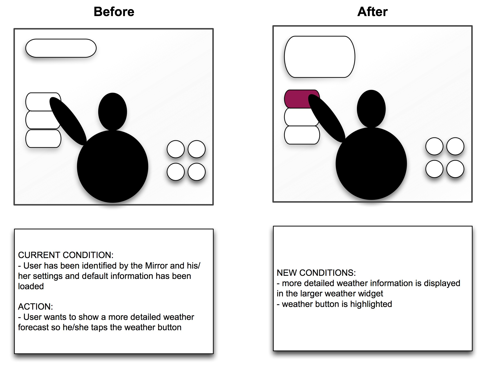

Project 1: Personal Mirror
- Submission includes:
1) A 1000 x 500 or 500 x 500 gif image of your
final interface which should be named p1.groupID.gif. Your groupID will be determined after you form your group.
2) GitHub repository link. You should also name your git project P1.groupID
3) Presentation page (e.g. GitHub page),
these are due at 11:59pm Sunday, Nov 3rd and should be sent through Email (with the subject: CS3366 P1 submission: groupID or CS5332 P1 submission: groupID) to the harichandana.byna@ttu.edu.
4) Teammate feedback are due at 11:59pm Wednesday, Nov 6th and should be sent through Email (with the subject: CS3366 P1 feedback: groupID or CS5332 P1 feedback: groupID) to the harichandana.byna@ttu.edu. It is 1% of your final score.
- This homework is 30% of your final grade:
- 25% for design, implementation, in-class presentation from the instructor.
- 5% for design, implementation, and presentation from the class (other students).
- You need to provide feedback to the presenting students to score the 2% of your final result. No feedback, or Nonsense feedback gets 0%.
Scoring link: https://demo-presentation.herokuapp.com/scoring
The feedback (ranging from 1 to 10 where 10 is the best) includes:
1) Does the project follow the golden rules and principles in lecture 2,3, and 4?
2) Usability of the interface
3) Visual appealing
4) Interactivity
5) Efforts
6) Comments (optional). Only the instructor will see this.
- Monday, Oc 21: 2-minute Sketch presentaion
1) Send your github repo link, presentation link, group picure, and sketch picture, named p1.groupID.png, (with the subject: CS3366 P1 sketch: groupID or CS5332 P1 sketch: groupID) to the harichandana.byna@ttu.edu by 11:59pm Saturday, Oct 19th.
2) Indtroduce team members and duties
3) Present your scketch UI and the main functions to be supported?
4) How far did you go with the implementation?
5) The plan to move forward?
Here is an example of Prototype sketching.

Homework Description:
- People now have access to a rapidly growing number of public data sources from the web/cloud which are getting augmented with personal sensors which now commonly talk to mobile phones or web pages. We are going to look at designing an interface to make this kind of data and more available on your personal bathroom mirror (single person use), which could act as a large display touch display.
- You will be working in groups. Due to the class size, the group size will probably be 4-5 people, which will give us 20 groups. You will need to choose your team, and email me the member names by 11:59pm Wenesday, Oct 2nd to harichandana.byna@ttu.edu (with the subject: CS3366 P1 group formation or CS5332 P1 group formation:) . If you only have a partial team (1 person, 2 people, 3 people) that's OK, I can randomly assign people to fill in, or mix and match partial teams. If you are interested in being added onto a team you must to talk to the instructor after classes.
Sketch phase
In this phase you are going to think about the user interface to a
bathroom mirror that has been combined with a display screen,
speakers, and possibly microphones. Think of something like a
large thin-border touch TV with a half-silvered mirror in front of
it so it continues to reflect the user's image while being able to
simultaneously display computer generated graphics and act as a
touch screen for interaction. Its main function is to still act
like a mirror, but while you are in front of the mirror the mirror
will give you additional information. Since it is a single person use, we do not worry about privacy for now. A microphone is not required but you may choose to add one.
The project should be implemented in p5.js; other supporting javascript libraries can be used.
Some of the general information that the mirror will provide are
- personalized calendar events for today
- personalized news feed items, text messages, social feed items,
- clock
- local weather
- Password login or face recognition is not required?
- The mirror can be connected to Wifi and synched with your smart phone
The mirror should also provide health-related information such as
- how long you slept last night, how much was light sleep vs
deep sleep, and how your total hours sleep compares to the
last week of data
- your current weight (assuming you have a scale embedded in
the floor in front of the mirror), and how it compares to the
last week of data
- how many steps you took, how long you stood, and how long you exercised yesterday, and how that compares to the last week of data on a time series plot.
- how long do you spend in front of the mirror in the morning
and evening?
Some other things the system should do
- allow the user to customize the display - e.g. the widget
sizes and locations (drag and drop items in the desired location on the screen)
- play music when you are brushing your teeth or in the shower
- how do you control the playlist?
- It can be your TV/computer as well
- act as a light source (with different possible colours)
- your imagination
General grade scale:
- implementing the interface for the general information and health information with a good interface gets a C
- adding other useful features like those in the 'other things' section with a good interface gets a B
- having an elegant design for those features, or a very good design with some other useful features gets an A
In-class presentation:
The presentation is 10 minutes per group. Make sure that you are ready to talk right after the group in front of you is done.
You are getting votes from other groups on the go. This is also 5%/30% of your homework score .
Please practice your talk. Show the basic functionality and emphasize on why your interface is different.
Project1 teams